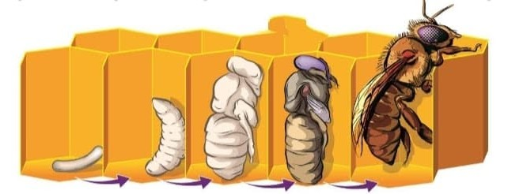

الملكة
- الأنثى الأساسية المسؤولة عن وضع البيض.
- توجد عادة ملكة واحدة في المستعمرة.
النحل من الكائنات الصغيرة التي تلعب دورًا كبيرًا في الطبيعة
حكاية خلية... رحلة قصيرة في عالم مخلوق صغير يحمل أسرارًا عظيمة، من لحظة خروجه من البيضة إلى صناعة العسل، ومن دوره في تلقيح الأزهار إلى ما ذكره القرآن الكريم في خلقه.


النحل حشرات طائرة تنتمي إلى رتبة غشائيات الأجنحة، ويتميز بجسمه الصغير وأجنحته ووجود شعيرات تساعد بعض أنواعه على جمع حبوب اللقاح.
يمر إنتاج العسل بعدة خطوات دقيقة، من زهرة إلى عين سداسية في قرص شمعي.
تجمع النحلات رحيق الأزهار.
تنقل الرحيق إلى الداخل.
تعالجه إنزيمات النحل وتساعد حركة أجنحته على تقليل الماء فيه.
يُخزّن العسل في العيون السداسية داخل الأقراص الشمعية.
ذكر الله سبحانه وتعالى النحل في القرآن الكريم، وخصص له سورة كاملة باسم سورة النحل، وهي السورة السادسة عشرة في القرآن الكريم.

يمكن تقسيم المعاني إلى أربعة معانٍ واضحة:
﴿أَنِ اتَّخِذِي مِنَ الْجِبَالِ بُيُوتًا وَمِنَ الشَّجَرِ وَمِمَّا يَعْرِشُونَ﴾ — أرشد الله النحل إلى اتخاذ بيوت في الجبال والأشجار وما يبنيه الناس.
﴿ثُمَّ كُلِي مِن كُلِّ الثَّمَرَاتِ﴾ — إشارة إلى غذاء النحل واعتماده على الأزهار والثمرات.
﴿يَخْرُجُ مِن بُطُونِهَا شَرَابٌ مُّخْتَلِفٌ أَلْوَانُهُ﴾ — شراب يخرج من بطون النحل، وتتنوع ألوانه بحسب مصادر الرحيق.
﴿فِيهِ شِفَاءٌ لِّلنَّاسِ﴾ — بيان ما جعل الله في العسل من فوائد وخصائص نافعة للإنسان.
حقائق صغيرة تكشف مدى دقة هذا المخلوق العجيب.

للنحلة عينان مركبتان وثلاث عيون بسيطة تساعدها على الاستدلال بالضوء.

يمكن للنحلة الطيران بسرعة تقارب 24 كيلومترًا في الساعة.
تحافظ العاملات على حرارة الخلية لتقارب 35 درجة مئوية لتربية الصغار.

ترقص النحلة العائدة لتخبر زميلاتها باتجاه الرحيق ومسافته.
عند تخزينه بشكل صحيح، يمكن أن يبقى العسل صالحًا لزمن طويل جدًا.

قد تضع الملكة آلاف البيضات يوميًا في موسم النشاط.